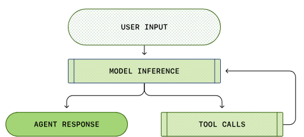
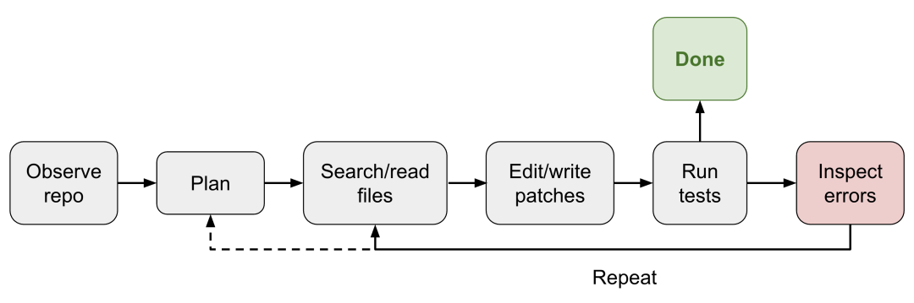
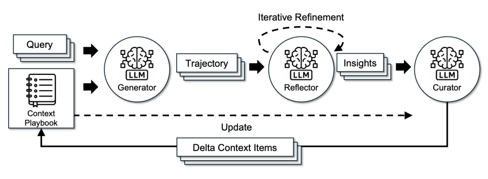
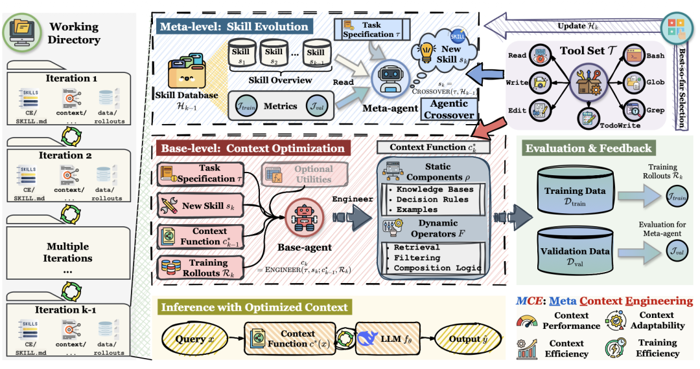
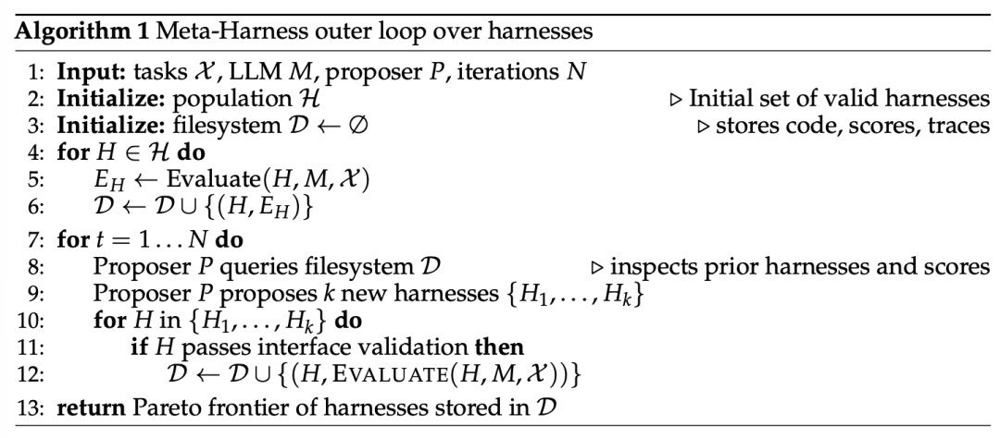

大家好，我是皇子。
一周前，Lilian Weng 发了一篇讲 Harness 的新文章，标题叫 Harness Engineering for Self-Improvement。
我一开始看到这个标题的时候，第一反应其实有点复杂。
因为 Harness 这个词，这几个月已经很火了。
我自己前面也写过一篇题为《2026年的 Harness工程师》的草稿，当时更多是在讲一个新岗位轮廓，讲的是：AI 代理不再只是一个会说话的模型，它开始需要一套工程化的“缰绳”。
但这次不一样。
这篇文章真正打到我的，不是又提出了一个新概念。
而是它把一件很多工程师已经模模糊糊感受到、但还没说透的事情讲明白了：
这篇原文其实不是专门讲 Claude Code，而是把 Claude Code、Codex 这类 coding agent 放在一起看：为什么它们越来越强，答案可能不只在模型，而在模型外面那一整套运行系统。
换句话说。
我们以前太容易把注意力放在模型参数、榜单分数、上下文长度上。
但今天你真正用 Claude Code、Codex、Cursor 这类工具的时候，决定体验差距的，往往已经不只是“脑子”本身。
而是这颗脑子，怎么被组织起来，怎么读文件，怎么调工具，怎么记东西，怎么中断，怎么恢复，怎么把并行任务收回来。
这套东西，就是 Harness。
先说结论
我先把结论摆前面。
在 2026 这个时间点，Claude Code、Codex 这类 coding agent 之所以越来越强，我觉得至少有一半原因，不在“模型突然神了一截”，而在它背后的 Harness 越来越成熟了。
这个判断，背后有三个信号。
第一，模型之间的纯能力差距还在，但正在变得没那么决定性。
第二，长任务、真项目、真实仓库，越来越考验运行时设计，而不是单次问答智商。
第三，Claude Code、Codex 这类工具的进化方向，已经明显从 Prompt 工程，转向了 workflow、memory、subagent、permission、context engineering 这些“系统层能力”。
这件事，特别像后端工程里的一个老道理。
同样是 MySQL。
有的系统跑起来像丝滑的交易引擎。
有的系统一到大促就抖。
差别当然不只是数据库内核。
还在连接池、事务边界、缓存策略、限流、重试、索引设计、故障恢复。
模型和 Harness 的关系，也差不多。
模型像引擎，Harness 像整辆车。
只盯着引擎，很容易低估整车调校的价值。
为什么我会说，答案可能不在模型
你仔细想一下，Claude Code、Codex 这类工具真正厉害的地方，很多都不是“它回答得多优美”。
而是它开始越来越像一个能长期工作的工程系统。
它会自己去看文件。
它会决定什么时候搜索、什么时候读取、什么时候编辑、什么时候停下来问你。
它会把工具结果接回下一轮推理。
它会在上下文变长后做压缩。
它还会把一些高噪音任务交给子代理去干，最后只把摘要拿回来。
这已经不是一个“聊天模型”了。
这是一个运行时。
Lilian Weng 在文里引用的一个典型 loop，大概就是这个意思：

图片来源：OpenAI，
Unrolling the Codex agent loop
这里面最关键的不是“模型多聪明”。
而是这一整条链路：
用户目标 -> 计划 -> 工具调用 -> 观察结果 -> 再决策 -> 再执行。
如果你做过后端系统，其实会觉得很熟。
这东西非常像一个带状态的 workflow engine。
它不是收到请求就 return。
它要在一个循环里持续推进任务，直到目标满足，或者必须中断。
所以我现在越来越认同一个说法：
Prompt 只是 Harness 的一个输入面。真正决定上限的，是 runtime 怎么组织整个工作过程。
Harness 到底是什么
如果用一句更落地的话来解释。
Harness 不是“给模型加点 Prompt”。
Harness 是模型接入真实世界之前的那层运行骨架。
它至少要解决 5 件事：
1. Workflow：这一轮先想什么，再做什么，失败后怎么继续
2. Tools：模型能调哪些工具，返回值怎么喂回去
3. Permissions：哪些操作可以直接做，哪些必须停下来问用户
4. Memory：哪些信息要放上下文，哪些要落文件，哪些要压缩
5. Evaluation / Recovery：结果好不好，错了怎么修，能不能恢复执行
Lilian 在文里给了一个更完整的 coding agent harness 结构图：

图片来源：Lilian Weng 原文配图，
Harness Engineering for Self-Improvement
你看这张图，基本就能明白为什么 Claude Code、Codex 这类 coding agent 的竞争力，越来越不像“一个模型 UI”。
它更像一个给模型包上文件系统、shell、权限系统、记忆层、工具编排层的开发环境。
这个转变，我觉得很重要。
因为它意味着 AI 编程工具的竞争，正在从“谁更会答题”，走向“谁更像一个靠谱的工程同事”。
下面这个最小 loop，已经很接近 Harness 的核心骨架了：
while (!taskDone) {
const plan = think(goal, context);
const action = chooseTool(plan, permissions);
const result = runTool(action);
context = updateContext(context, result);
saveArtifacts(result);
taskDone = shouldStop(goal, context);
}短短几行，里面其实已经把问题说透了。
模型只负责 think。
真正把任务跑起来的，是外面的 chooseTool、runTool、updateContext、saveArtifacts、shouldStop。
这才是 Harness。
Claude Code和Codex变强背后是5个Harness设计
我把这篇文章真正值得带走的东西，收敛成 5 个 Harness 设计。
这 5 个点，或许是你今天真的在做 Agent、做 AI 编程工具、或者想把 Claude Code、Codex 这类工具用得更深时，迟早会撞上的 5 个工程问题。
1. Workflow 设计，不是问一句答一句
很多人理解 AI 工具，还停留在搜索框逻辑。
问一句。
答一句。
结束。
但 Claude Code、Codex 这种东西，真正厉害的地方，是它已经不再是单轮问答，而是一个持续推进任务的 loop。
也就是：
目标进来。
先规划。
再调用工具。
拿到观察结果后，再进入下一轮决策。
这就是 Harness 里最基础、也最容易被低估的一层，workflow orchestration。
为什么这个点重要？
因为模型再强，如果没有这层 loop，它也只能停留在“给建议”。
只有把计划、执行、观察、修正连起来，它才开始像一个能把事做完的系统。
所以我现在越来越觉得，Claude Code、Codex 这类 coding agent 变强的第一层，不是回答更像人。
而是会工作了。
2. 文件系统做记忆，不再把上下文当垃圾桶
很多人一说上下文，还停留在“把更多字塞进窗口”。
但真正能跑长任务的系统，不可能把所有东西都硬塞进 prompt。
日志、代码 diff、失败记录、研究摘要、决策过程，这些一旦变长，就必须外置。
Lilian 在文里明确提到，文件系统作为持久记忆，是长任务 Agent 的关键模式之一。
这个判断，我特别认同。
因为文件，比上下文稳定得多。
文件可以分层。
可以归档。
可以被搜索。
可以跨轮次重用。
也可以在中断后恢复。
这点其实也特别像后端系统里的“冷热分层”。
热数据放内存。
冷数据放持久层。
如果你把所有状态都塞进内存，服务迟早炸。
Agent 也是一样。
一个越来越成熟的 Harness，目录结构通常会长成这样：
.claude/
CLAUDE.md
memory/
project_memory.md
artifacts/
research_notes.md
failures.log
draft_patch.diff
tasks/
todo.md
run_status.json你会发现，这已经不是聊天记录了。
这是一套工作现场。
3. 子代理分工，不让主线程被噪音淹没
这一点，几乎是最近所有强 Agent 工具共同的方向。
主代理不应该什么都自己看。
它最宝贵的，不是“亲自搜 100 个文件”，而是“做判断、做归纳、做收敛”。
所以大量高噪音、强搜索、弱决策的活，就应该下放。
比如：
• 一个子代理专门去翻日志
• 一个子代理专门去找相关文件
• 一个子代理专门去找测试缺口
• 一个子代理专门去做代码审查
最后主代理只拿摘要回来。
这点你如果做过网关或者异步任务编排，也会很熟。
主流程不应该被边缘 I/O 细节淹没。
Claude Code、Codex 这套思路，背后其实就是在做“上下文污染隔离”。
下面这种定义方式，其实已经很像真实工程里的可复用 worker 了：
---
name: test-reviewer
description: 查找本次改动缺失的测试点
tools: Read, Grep, Glob
model: sonnet
---
你是测试审查助手。
只做三件事：
1. 找出改动涉及的模块
2. 判断已有测试是否覆盖
3. 输出缺失测试清单，不直接改代码你会发现，Subagent 不是花活。
它本质上是在给 Agent runtime 做职责分层。
4. 权限与恢复机制，决定它敢不敢进真实项目
这点我觉得特别像后端里的“熔断 + 回滚 + 人工确认”。
模型本身并不知道什么操作风险高。
它只知道这也是一个 command，那也是一个 command。
但工程世界不是这么算的。
编辑一个本地文件，和删一个目录，不是一回事。
跑一次测试，和 force push 到主分支，也不是一回事。
所以一个成熟的 Harness，一定要有权限分层和失败恢复。
什么能直接做。
什么要提醒。
什么必须停下来问人。
以及做错了以后，系统怎么继续，不是直接死在那里。
这其实正是 Claude Code、Codex 这类工具好用但不那么吓人的原因之一。
它不是单纯“会执行命令”。
而是越来越像一个知道边界、知道什么时候该停的执行系统。
如果没有这一层，Agent 就很难真正进入团队开发流程。
因为大家会觉得它聪明是聪明。
但不敢交事。
5. Context Engineering，开始变成新的优化主战场
这是 Lilian 这篇文章里，我觉得最值得公众号读者看到的一点。
她后半部分讲了 ACE、MCE、Meta-Harness 这些研究。
名字看起来很学术。
但翻成人话，其实就是一句：
以后优化 AI 系统，优化对象不再只是 prompt 内容，而是“如何构造上下文”和“如何优化构造上下文的方法”。
ACE 这个图特别直观：

图片来源：Zhang et al. 2025，
Agentic Context Engineering
它把上下文当成一个不断演化的 playbook。
不是把 prompt 越写越长。
而是让系统从成功轨迹、失败轨迹里，持续沉淀可复用的结构化经验。
再往前一步，就是 MCE：

图片来源：Ye et al. 2026，
Meta Context Engineering via Agentic Skill Evolution
这时候系统优化的，已经不是某一版 prompt 了。
而是“管理上下文的方法本身”。
Lilian 甚至进一步引用了 Meta-Harness 这种方向：

图片来源：Lee et al. 2026，
Meta-Harness
看到这里你会突然意识到一件事。
AI 工程下一阶段的竞争，很可能不是谁写 Prompt 更会写，而是谁更会设计、优化、验证 Harness。
一个最小可跑的 Harness Demo
讲到这里，如果还只是概念，其实不过瘾。
我给一个很小的 demo。
这个 demo 故意先不接模型。
因为我想说明，哪怕先不接模型，光把 Harness 骨架搭出来，你就已经离“能长期工作”的 Agent 近了一大步。
运行方式：
node mini-harness.mjs "搜索仓库里和 harness 相关的文件"完整代码如下：
// mini-harness.mjs
import fs from "node:fs";
import path from "node:path";
import { execSync } from "node:child_process";
const task = process.argv.slice(2).join(" ").trim();
if (!task) {
console.error("Usage: node mini-harness.mjs <task>");
process.exit(1);
}
const root = process.cwd();
const runDir = path.join(root, ".mini-harness");
fs.mkdirSync(runDir, { recursive: true });
const memoryFile = path.join(runDir, "memory.md");
const reportFile = path.join(runDir, "report.md");
function log(step, content) {
fs.appendFileSync(memoryFile, `## ${step}\n${content}\n\n`, "utf8");
}
function run(cmd) {
try {
return execSync(cmd, { cwd: root, encoding: "utf8" }).trim();
} catch (err) {
return String(err.stdout || err.message || "").trim();
}
}
function plan(userTask) {
if (/harness|agent|claude/i.test(userTask)) {
return [
"列出仓库文件",
"搜索 harness / agent / claude 相关关键词",
"汇总最相关的文件和原因"
];
}
return ["列出仓库文件", "按任务关键词搜索", "输出摘要"];
}
const steps = plan(task);
log("Task", task);
log("Plan", steps.map((s, i) => `${i + 1}. ${s}`).join("\n"));
const files = run("rg --files");
log("Files", files.split("\n").slice(0, 50).join("\n"));
const hits = run('rg -n "harness|agent|claude" .');
log("SearchHits", hits || "No hits");
const summary = [
`任务：${task}`,
"",
"执行结果：",
"- 已列出仓库文件",
"- 已完成关键词搜索",
"- 已把中间过程持久化到 .mini-harness/memory.md",
"",
"你下一步可以做的事：",
"1. 把 plan() 替换成模型调用",
"2. 把固定关键词搜索换成模型生成命令",
"3. 增加权限判断和失败重试"
].join("\n");
fs.writeFileSync(reportFile, summary, "utf8");
console.log(summary);这个 demo 虽然很小，但已经有了 Harness 最关键的 4 个零件：
1. 任务规划：先决定怎么做
2. 工具执行：实际调用 rg
3. 持久记忆：中间过程落到 .mini-harness/memory.md
4. 结果产物：最终生成 report.md
下一步你只需要把 plan() 和 summary 那部分，替换成模型调用。
这时候，一个真正的 Agent Harness 才算长出来。
所以你会发现，模型不是第一块积木。
运行骨架才是。
对普通工程师来说，最值得学什么
说到底，这篇文章最重要的，不是让你记住 ACE、MCE 这些缩写。
而是让你意识到，AI 工程正在从“怎么问模型”，转向“怎么设计工作系统”。
如果你是后端、架构、技术负责人，我觉得接下来最值得补的，不是多背几个 Prompt 技巧。
而是这 4 个能力：
1. 任务拆解能力：什么时候该单线程，什么时候该 subagent
2. 上下文治理能力：什么该进窗口，什么该落文件
3. 权限与恢复设计：哪些动作能自动做，哪些必须拦截
4. 评估与反馈闭环：不是让模型干完，而是让系统知道干得对不对
这也是为什么我越来越觉得，Harness 这个方向，真的值得长期看。
因为它不是一个短期热词。
它正在变成 AI 时代的软件工程基本功。
最后
如果今天还有人问我，为什么 Claude Code、Codex 这类 coding agent 越来越强。
我大概率不会再只回答“因为模型更强了”。
我会说，因为它越来越像一个系统，而不是一个聊天框。
模型当然重要。
但模型只是大脑。
真正让它在真实工程世界里持续工作、少犯错、能恢复、可扩展、可并行的，是外面那层 Harness。
这层东西，过去经常被当成“辅助”。
但接下来，它很可能才是主战场。
如果你也是后端 / 架构 / 技术负责人，正在把 AI 接进团队开发流程，欢迎关注我。后面我会持续写 AI 编程、API 网关、Code Review、Token 成本和团队提效。
你也可以留言告诉我：你们团队现在最卡的是什么，AI 工具选型、Code Review、API 成本，还是团队提效？
学习路径:
• 第 1 步：先读 Lilian Weng 这篇原文，建立对 Harness 的完整地图：https://lilianweng.github.io/posts/2026-07-04-harness/
• 第 2 步：再读 OpenAI 的 Codex loop 文章，看 agent runtime 最基础的执行循环：https://openai.com/index/unrolling-the-codex-agent-loop/
• 第 3 步：如果你在用 Claude Code，重点看 subagent 和 docs，把“上下文隔离”先用起来：https://code.claude.com/docs/en/sub-agents
• 第 4 步：自己写一个最小 harness demo，从文件系统持久记忆开始，不要一上来就追求全自动
• 第 5 步：最后再回头看 ACE / MCE / Meta-Harness，这时你会更明白 context engineering 真正在优化什么
/ 如果这篇文章对你有帮助，随手给我点个赞、转发、爱心三连❤️。感谢你的阅读，我们下期见。
参考:
• Harness Engineering for Self-Improvement：https://lilianweng.github.io/posts/2026-07-04-harness/
• Unrolling the Codex agent loop：https://openai.com/index/unrolling-the-codex-agent-loop/
• Agentic Context Engineering: Evolving Contexts for Self-Improving Language Models：https://arxiv.org/abs/2510.04618
• Meta Context Engineering via Agentic Skill Evolution：https://arxiv.org/abs/2601.21557
• Meta-Harness: End-to-End Optimization of Model Harnesses：https://arxiv.org/abs/2603.28052